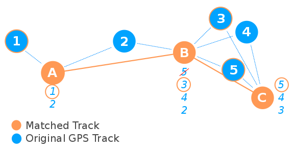
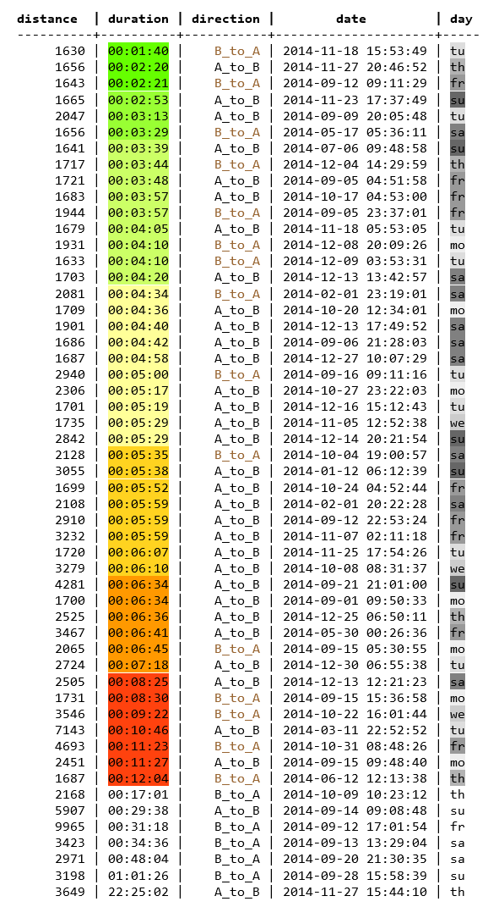

MAGDa - Management und Analyse Geotemporaler Daten
Compare trips in floating car data using PostGIS' LR features
Posted on 17.02.2017In this post we want to show you how to compare different GPS trips stored in a PostGIS databases using methods of linear referencing. In our example we use Floating Car Data (FCD) of Dresden. The data set is not available to the public, but our algorithms should work on spatio-temporal trip data in general.
About FCD
FCD is a common term in traffic research for data that is derived from vehicles equipped with a GPS unit. FCD consists of a series of timestamps, positions (longitude and latitude) and usually additional parameters like the speed or the angle of the vehicle. Therefore, FCD can be an important source for calculating the travel times of links in a road network in conjunction with data streams of static sensors like loop detectors.
The city of Dresden maintains a traffic management system called VAMOS [1] and uses the FCD to match the recorded speed to a corresponding network link or to validate the reports that are displayed on electronic traffic signs. Compared to other taxi trip data sets in the world (e.g. New York, Beijing etc.) the frequency of the GPS in Dresden is often very high (between 5 to 10 seconds).
Raw linestrings vs. matched linestrings
In a first approach we imported the FCD into PostgreSQL with PostGIS extension and created linestrings from the point data. We included the timestamp to each coordinate as a measure value. After generating the linestrings we were curious how the data looked like. We created a new PostGIS layer in QGIS and used a cool blending styling to display the lines. It looks gorgeous when the lines are loaded incrementally into QGIS. But when it was finished we got a white screen, because there was trip data all over the place.
What happened? We have simply connected all GPS points with each other and did not take care about the underlying road network. Despite the high frequency of GPS signals there can still be huge jumps in the data. This might be acceptable when comparing just the travel time of different trips, but it gets too sparse when checking the length. This is where map matching comes into play. Map matching is a very common practice to assign raw trip data to an underlying geometry. Different approaches exist (see [2]) of which the Hidden Markov Model (HMM) algorithm has proven to be very efficient.
We choose to use the GraphHopper MapMatching API [3] to update our trip data. In the first place, GraphHopper is an open source routing engine based on OpenStreetMap (OSM), but it also provides other useful mobility services [4]. Just recently, GraphHopper has integrated the HMM algorithm into their Map Matching API [5][6]. As we had some trouble to create a proper input GPX file, that GraphHopper can operate on, we choose to write a little Java program, that
- reads the raw FCD trip data from our PostgreSQL database,
- creates a trip as long as the spatial and temporal lag between two points does not get to big (otherwise, it cuts off the existing trip and starts a new one immediately),
- performs the map matching,
- and stores the matched track back into a new table in the database.
We simply called the programm FCD2pgSQL [7]. It can be found on our GitHub page.
Map Matching and interpolating time and speed
Until now GraphHopper's MapMatching API returns the matched geometry, but drops the time information. Because we want to compare the duration of trips that went through the same corridor we had to come up with a way to transfer the time information to the matched tracks. We chose a two step strategy.First step: Take the points of the original track and find possible counterparts in the matched track. We consider points in range of 50m as possible candidates. There can be more candidates for one point. The closest one is the winner, but it can also be the winner candidate for another node. Therefore, the minimal distance between a candidate node and all possible target nodes is taken to pick the best match. This frees the space for another node to become the best candidate unless the order of points is not mixed up. The time and the speed of the original GPS point is copied to the target node in the matched track.
Second: After the first step, the matched tracks can still have gaps (nodes) without time and speed information. If the gap is at the beginning or the end of the track and if it is not longer than 200m we simply copy the speed values. For gaps in between we calculate the speed using a linear equation. With the speed information at each point we can calculate the time the car needed to get from one point to another given a constant acceleration.
Before:
{
lon, lat, 1396446450000, 7,
lon, lat, 0, 0,
lon, lat, 0, 0,
lon, lat, 0, 0,
lon, lat, 1396446455000, 16
}
After:
{
lon, lat, 1396446450000, 7,
lon, lat, 1396446450006, 9,
lon, lat, 1396446450020, 12,
lon, lat, 1396446450039, 16,
lon, lat, 1396446455000, 16
}
When the matching process is complete we import the tracks into Postgres. To preserve both the temporal and the speed measure we set speed value as the Z value. We insert the tracks in batches to lower the traffic between our Java application and the database.
Some PostGIS Magic
Now, we are ready to compare different trips with each other. But taking the trips as a whole turned out to be not appropriate because their start and end positions are highly diverse. We wanted to be flexible and created a function that takes two arbitrary points and a buffer distance as an input and returns all trips that are intersecting both buffered points. In our example we choose Dresden main station as point A and the university as point B.
The trips are not returned as a whole. We use the PostGIS function ST_LineSubstring to cut out the segment in between the two points. This function requires two fraction values to know where to split the line. They can be determined with ST_LineLocatePoint. Our given points don't have to intersect with the trip geometry because PostGIS automatically uses the closest point on the linestring.
SELECT
CASE WHEN lr.start_fraction < lr.end_fraction
THEN ST_LineSubstring(lr.geom, lr.start_fraction, lr.end_fraction)
ELSE ST_LineSubstring(lr.geom, lr.end_fraction, lr.start_fraction)
END AS trip_geom
FROM (
SELECT geom,
ST_LineLocatePoint(
geom, 'SRID=4326;POINT(13.73 51.04)'::geometry
) AS start_fraction,
ST_LineLocatePoint(
geom, 'SRID=4326;POINT(13.736 51.029)'::geometry
) AS end_fraction
FROM matched_tracks
WHERE ST_Dwithin('SRID=4326;POINT(13.73 51.04)'::geometry, geom, 0.00143)
AND ST_Dwithin('SRID=4326;POINT(13.736 51.029)'::geometry, geom, 0.00143)
) lr;
With ST_Length we calculate the length of the subset trips. To get the duration we can take the M values of the first and last point of each subset. They are already interpolated by ST_LineSubstring as well as the speed sitting at the Z position. Alternatively, there is the function ST_InterpolatePoint that can be applied against the whole trip. We've run the query against one year of FCD, which is nearly 2.3 mio trips and it just takes around 7 seconds.
SELECT
CASE WHEN lr.start_fraction < lr.end_fraction
THEN round(ST_Length(ST_LineSubstring(lr.geom, lr.start_fraction, lr.end_fraction)::geography))::int
ELSE round(ST_Length(ST_LineSubstring(lr.geom, lr.end_fraction, lr.start_fraction)::geography))::int
END AS distance,
CASE WHEN lr.start_m < lr.end_m
THEN date_trunc('seconds', (to_timestamp(end_m) - to_timestamp(start_m)))
ELSE date_trunc('seconds', (to_timestamp(start_m) - to_timestamp(end_m)))
END AS duration,
CASE WHEN lr.start_m < lr.end_m
THEN 'A_to_B'
ELSE 'B_to_A'
END AS direction,
to_timestamp(start_m) AS date,
substring(to_char(to_timestamp(start_m), 'day'),1,2) AS day
FROM (
SELECT geom,
ST_LineLocatePoint(
geom, 'SRID=4326;POINT(13.73 51.04)'::geometry
) AS start_fraction,
ST_LineLocatePoint(
geom, 'SRID=4326;POINT(13.736 51.029)'::geometry
) AS end_fraction,
ST_InterpolatePoint(
geom, 'SRID=4326;POINT(13.73 51.04)'::geometry
) AS start_m,
ST_InterpolatePoint(
geom, 'SRID=4326;POINT(13.736 51.029)'::geometry
) AS end_m
FROM matched_tracks
WHERE ST_Dwithin('SRID=4326;POINT(13.73 51.04)'::geometry, geom, 0.00143)
AND ST_Dwithin('SRID=4326;POINT(13.736 51.029)'::geometry, geom, 0.00143)
) lr
ORDER BY duration;

From the results we can see some obvious patterns. Fast trips do not appear during rush hour periods on weekdays (around 7 o'clock in the morning and 6 o'clock in the evening). Only around 10% of the trips are happening in spring and summer months which is probably related to the weather conditions. Most trips between the main station and university lasted for around 5 minutes. The route distance is more or less the same. To get a sense what is a realistic duration we can try available routing engines. HERE and Google are including the traffic situation into their routing which produces a trip duration that is similar to our result. But a rather short duration like with got from GraphHopper or the OSRM is also possible.
| Routing Engine | Distance | Duration |
|---|---|---|
| Graphhopper | 1673 m | 00:02:48 |
| OSRM | 1700 m | 00:03:00 |
| HERE Maps | 1600 m | 00:04:00 |
| Google Maps | 1700 m | 00:05:00 |
Generally more taxi trips are coming from the train station, which is reasonable as arriving passengers who do not know the city are more likely to take a taxi cab. We check the mean occupancy of 2014 detected at a group of sensors installed on the main road that connects the two given points. Sensors 493 and 494 are sitting on the lanes (left and right) with direction to the city centre, 491 and 492 are installed on the outgoing lanes (left and right). The curves for mean occupancy in figure ?? are as expected. In the morning hours more cars are coming from the suburban areas and they are heading back in the evening. Thus, trips from A to B should be faster in the morning whereas trips from B to A could be faster in the evening. However, we cannot see this correlation in the result set.
Another idea that came to our mind was to find out what kind of roads the taxis are taking at different times and locations. As we've done map matching, we should be able to find out, which streets were taken by a taxi. We will come back to this idea in our next blog post.
Literatur
- https://tu-dresden.de/bu/verkehr/vis/vlp/forschung/forschungsprojekte/verkehrsmanagementsystem-vamos-dresden?set_language=en
- Quddus, M.A.; Ochieng, W.Y. & Noland, R.B. (2007). Current map-matching algorithms for transport applications: State-of-the art and future research directions. Transportation Research Part C 15 (5). 312–328.
- https://graphhopper.com/api/1/docs/map-matching/
- https://graphhopper.com/api/1/examples/
- https://graphhopper.com/blog/2016/08/08/releasing-the-map-matching-api/
- https://github.com/bmwcarit/hmm-lib
- https://github.com/MAGDa-BeuthHS/fcd2pgsql